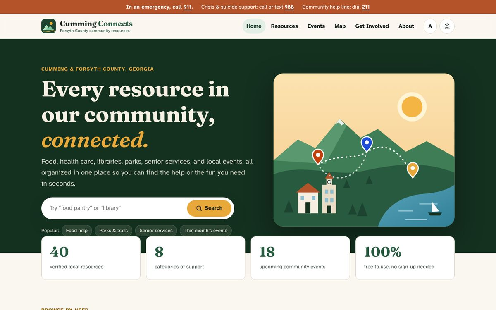
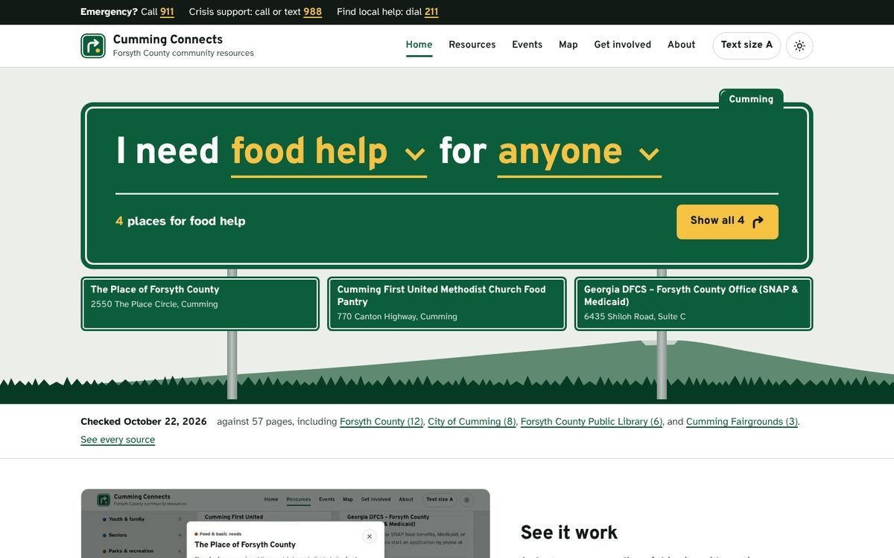

About
Who made this, and why.
The problem
Forsyth County is one of Georgia’s fastest-growing counties, but its help is spread across dozens of city, county, library, and nonprofit websites.
New residents don’t know where to start. Seniors struggle with cluttered pages. Families who need help can’t always tell what’s still open. Cumming Connects puts resources and events in one consistent, accessible place. Anything we couldn’t fully confirm is labeled.
How to use it
- Use the sign on the home page to say what you need.
- Search or filter the directory and the events calendar.
- Star places to save them on this device.
- Save events to My calendar, then add them all to your phone’s calendar in one tap.
- Use A / A+ / A++ for bigger text and the moon for dark mode.
- Tap the shapes button for Colorblind mode: colors that are easier to tell apart, and a shape for each category. The Shape key button in the bottom corner shows what each shape means.
- Tap the speaker button to hear the page read out loud. To hear just one part, select that text first.
Who we designed for
Four people, each of whom must reach what they need in three taps or fewer.
| Who | What they need | What we built for them |
|---|---|---|
| A parent who just moved here | Schools, a library card, and weekend plans | The newcomer choice on the sign, and the calendar |
| A retiree with low vision | Senior center activities, without squinting | The text-size button, high contrast, and large buttons |
| A parent having a hard month | Food help, fast, on a phone during a lunch break | The sign, and one-tap calling and directions |
| A high school student | Volunteer hours and things to do with friends | The volunteer form and the events calendar |
How we built it
Research
We collected 40 places and 17 events, plus the monthly council meetings, from official and trusted sources. We saved every source link and flagged anything that needed a second check.
Organize
We sorted resources into eight need-based groups and planned a seven-page site where every page is one click away from any other.
Version 1, then a hard look
Our first design worked, but it looked like a template. We listed every generic choice and replaced each one with something specific to Cumming. You can see the change below.
Design system
We based the look on GA 400’s green guide signs, Sawnee granite, and Lake Lanier, then turned it into reusable color, type, and component rules.
Build and test
We ran the same automated accessibility, speed, and interaction tests on version 1 and version 2 at phone, tablet, and desktop sizes, then compared the results.
Why it looks like a road sign
GA 400 runs straight through Cumming, and people here find their way by its green signs. Our site’s job is also wayfinding, so the home page starts with a sign that answers “Where do I go for…?” We kept the sign idea to that one spot so the rest of the site stays calm and easy to read.
#0B5D3B
#F5C242
#ECEEEA
#2B6F8F
#121A16
Overpass is an open-source take on Highway Gothic, the lettering on U.S. road signs. We use it for headings, the sign, and numbers.
Atkinson Hyperlegible was made by the Braille Institute so readers with low vision can tell similar letters apart. We use it for everything you read.
Category colors follow the U.S. road-sign color code: brown for recreation, blue for services, and red for safety. In Colorblind mode, each category also gets a road-sign shape, like the stop-sign octagon for safety and the school-sign pentagon for education.
Version 1 and version 2


Accessibility: built to WCAG 2.2 AA
According to the CDC, up to one in four U.S. adults has a disability. A community site has to work for all of them, so we tested it.
| What we checked | How | Result |
|---|---|---|
| Automated accessibility rules | axe-core on all 7 pages, phone and desktop, light and dark | 0 violations in 28 audits |
| Lighthouse accessibility score | Home, Resources, and Events, phone and desktop | 100 on all 6 runs |
| Color blindness | Every category color, simulated for the three common types of color blindness | Colorblind mode: the two most alike colors are 17 times easier to tell apart than in the standard colors, and every category has its own shape, so color is never the only clue |
| Text contrast | Every text color against its background | Lowest is 4.8:1 (yellow on sign green); everything else is 6:1 or higher, measured in light and dark mode |
| Keyboard only | Tab through every page; Enter, Esc, and arrow keys | Every control reachable; pop-ups close with Esc and return focus |
| Tap size | Every button and link on a 375-pixel phone | Buttons, chips, and calendar days are 44 pixels or larger; every other link is at least 24 pixels (WCAG 2.2 AA) |
| Reduce motion | Turned on the system setting | Every animation stops |
Found a barrier? Tell us with the suggestion form.
How we measure success
Every important action on the site sends a named event, ready for Google Analytics 4. Try it: use the site, then come back here.
Your visit, live
This visit so far: 0 pages viewed, 0 searches, 0 places opened, and 0 actions (calls, directions, saves, and calendar adds).
These counts only exist in this browser tab and are never sent anywhere.
Targets
| Goal | Metric (KPI) | Target | How it’s measured |
|---|---|---|---|
| Fast on any connection | Core Web Vitals: Largest Contentful Paint (LCP), Interaction to Next Paint (INP), Cumulative Layout Shift (CLS) | LCP under 2.5 s, INP under 200 ms, CLS under 0.1 | Lighthouse, PageSpeed Insights, Search Console |
| Accessible to all | Lighthouse accessibility score; axe violations | 95 or higher; 0 critical | Automated audits plus keyboard and screen-reader checks |
| People find what they need | Search-to-click rate (searches or sign picks followed by opening a place) | Over 60% | GA4 events search, sign_go, view_resource |
| Real-world action | Conversions: calls, directions, calendar adds | Up 10% each quarter | click_to_call, get_directions, add_to_calendar |
| Engaging content | Engagement rate; video plays | Over 55%; 1 in 5 home visitors play the video | GA4 engagement reports; video_play |
| People come back | Returning-user rate; saved places | Over 30% returning | GA4 retention; save_favorite |
| Community grows | Volunteer sign-ups and suggestions | 25 or more per month | form_submit completion rate |
| Easy to find on Google | Organic impressions and click-through rate (CTR) | CTR over 4% | Search Console, structured data for events |
| The directory has what people want | Zero-result search rate (searches that find nothing) | Under 5%; review the missed words every month | GA4 event search_no_results |
| Listings stay current | Data freshness: days since each listing was checked | Every listing re-checked within 90 days | The “Checked” date in js/data.js |
| People can finish key tasks | Task success rate in user tests (find food help, add an event, sign up) | 90% or higher, with no task over 3 taps | Five-person tests each semester, covering all four personas |
Speed test results
On November 11, 2026, we tested Home, Resources, and Events with Lighthouse, three times each, on a desktop and on a simulated phone over a slow 4G connection. The files were compressed, the way web hosts such as GitHub Pages serve them.
| What we measured | Result | Target |
|---|---|---|
| Lighthouse performance score | 99 on phones, 100 on desktop | 90 or higher |
| Lighthouse best practices score | 100 on all 6 runs | 90 or higher |
| Largest Contentful Paint (LCP): how fast the main content appears | 2.0 s or less on a phone; 0.6 s or less on desktop | Under 2.5 s |
| Cumulative Layout Shift (CLS): how much the page jumps while loading | 0.001 or less | Under 0.1 |
| Total Blocking Time: how long the page is too busy to respond (the lab stand-in for INP) | 40 ms or less | Under 200 ms |
Keeping it accurate
| How often | What we do |
|---|---|
| Every week | Read new suggestions, call the organization, and add or fix the listing. |
| Every month | Add next month’s events, review searches that found nothing, and check the metrics above. |
| Every 3 months | Re-check every listing’s hours and phone number, then update the “Checked” date. |
| Every semester | Run five user tests that cover all four personas, and fix whatever slowed people down. |
Common questions
- Does it cost anything?
- No. It’s free, and you never need an account.
- How do you know it’s right?
- Each listing links to the page we checked it against. Anything we couldn’t fully check says “Call to confirm.” Call before you go.
- I need help right now.
- Call 911 for an emergency, 988 for crisis support, or 211 for local help with food, housing, and bills.
- Do you save my information?
- No. Saved places and settings stay in your own browser. “Near me” never sends your location anywhere.
- Something is missing or wrong.
- Tell us with the suggestion form. We check each one before adding it.